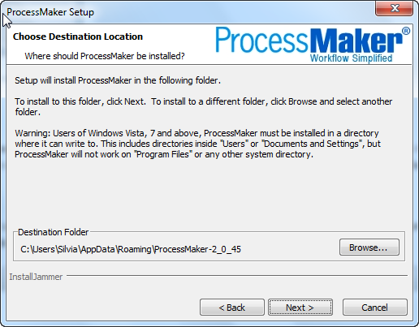
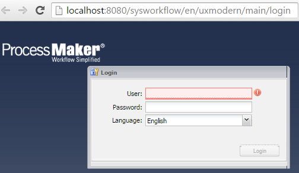
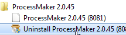
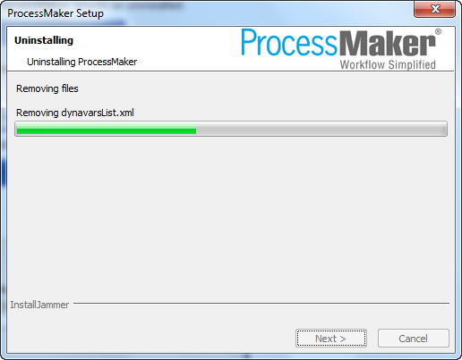

Overview
The user-friendly Windows Installer for ProcessMaker 2.0 automatically installs Apache 2.2.16, MySQL 5.1.50, PHP 5.2.14 and phpMyAdmin 3.3.7 and configures them to function with ProcessMaker.
Description
The ProcessMaker Windows Installer based on InstallJammer is designed to automatically install ProcessMaker without asking the user for confusing information such as port numbers for Apache and MySQL and passwords for MySQL and phpMyAdmin. The Windows Installer is designed for quick installations to be used on the local machine. To install ProcessMaker to be used over a local network or on the internet or to configure port numbers and passwords used by Apache, MySQL and phpMyAdmin, either do a manual install of ProcessMaker or reconfigure ProcessMaker after using the automatic installer.
The Installer can be used on a machine which already has an existing installation of Apache, PHP, MySQL and/or phpMyAdmin, but it will not use them. Instead, it installs new versions of Apache, MySQL, PHP and phpMyAdmin all under a unified directory (such as c:\Program Files\ProcessMaker-2_X_X or c:\Users\USERNAME\AppData\Roaming\ProcessMaker-2_X_X), which shouldn't interfere with existing installations of these programs, but the new programs will have to be run off different port numbers. For example, if existing installations of Apache and MySQL are already using the default ports 80 and 3306, then the ProcessMaker Windows Installer will use port 8080 or higher for Apache and port 3307 or higher for MySQL. To make ProcessMaker use the default ports, either uninstall the existing programs before running the ProcessMaker Windows Installer, or do a manual install to configure ProcessMaker to use an existing WAMP stack.
Before version 2.0.8, the Installer would automatically uninstall a prior installations of ProcessMaker before beginning a new installation, but beginning with version 2.0.8, the Installer will now install ProcessMaker in a separate directory, so multiple installations can run on the same machine using different port numbers.
From version 2.5, the version of Apache included on the Windows Installer will be 2.2.20, this version will prevent form DOS attacks. for more information about the vulnerability check this page
Recommendations
- It is strongly recommended NOT to use the automatic installation on Production servers. Instead use a manual installation.
- Due to an issue with php-setcookie on Internet, it is strongly recommended to synchronize times between server and computer, it means to have the same time on both of them, otherwise, it won't be possible to login in ProcessMaker.
Requirements
- Windows XP or later (32bit or 64bit)
- Note: The Windows XP installer does not support the Enterprise Edition plugin, so we suggest to use Windows 7 instead.
All the dependencies needed to run ProcessMaker are bundled in the easy-to-install WAMP (Windows/Apache/MySQL/PHP) Installer.
Note 1: If VMWare is installed on your computer, it is recommended to disable the VMWare Network Connection during the ProcessMaker Installation. See Disabling VMWare Network Connections.
Note 2: If any programs (such as Skype) use port 80, either reconfigure the program to use a different port or leave it running on during the ProcessMaker installation, so that the ProcessMaker installer will choose a different port. Find out which ports are being used with the DOS command: netstat -anb
Note 3: 32 bit versions of Apache, PHP and MySQL will be installed, which should work in both 32 and 64 bit versions of Windows. If you want to use 64 bit versions, then do a manual install.
Installation
Download ProcessMaker-2.X.X-Setup.exe from http://sourceforge.net/projects/processmaker/files. ProcessMaker versions are labeled according to the pattern MAJOR.MINOR.REVISION, such as 2.0.8, where 2 is the major version, 0 is the minor version and 8 is the revision number. Beta versions of ProcessMaker have the word beta appended to the version number. To download a recent version of ProcessMaker, go to the Releases folder and look for the highest version numbers. Look for the version to be installed inside each folder.
After downloading the installer, double click it to begin the installation. First, select which language to use in the installation wizard.

After selecting either English, Spanish or Brazilian Portuguese, click OK.

Click on Next to begin the installation of ProcessMaker.

Mark the option to accept the GNU Affero General Public License version 3 license used by ProcessMaker and then click on Next.

Windows XP and Server 2003
By default ProcessMaker will be installed in the %ProgramFiles%\ProcessMaker-2_X_X directory in Windows XP and Server 2003, which on English systems is generally located at C:\Program Files\ProcessMaker-2_X_X If installing ProcessMaker as a user without Administrator privileges, then select an installation folder where the user has file permissions (such as C:\Documents and Settings\USERNAME).
Windows Vista, 7, 8 and Server 2008
New security restrictions in Windows Vista/7/8/Server 2008 don't allow a program running on Apache to write to system files, so ProcessMaker can not be installed in the %ProgramFiles% directory. By default, ProcessMaker will be installed in the user's directory at C:\Users\USERNAME\AppData\Roaming\ProcessMaker-2_X_X
To install in a different location, click on the Browse button and select a directory where Apache, MySQL, PHP, ProcessMaker and phpMyAdmin will be installed.

To install in a new directory, click on Make New Folder to create a folder and give it a name, such as ProcessMaker.

Next, decide whether to select the option for Enable heartbeat. The "Heartbeat" is used to collect anonymous statistics every seven days about the number of workspaces, users and processes being used. This information is collected to help the ProcessMaker developers identify usage patterns and help improve the application in the future. If you do not what this information to be sent to the ProcessMaker developers, do NOT select this option.
Then, click on Next to continue with the installation wizard.

Check the settings for the installation, which are displayed in the dialog box.
Apache will be automatically configured to use an available port. If the default port 80 is already in use, then it will select port 8080. If that port is also in use, it will continue trying successive ports (8081, 8082, 8083, etc) until it finds a free one. Make sure that all Windows services are turned on when running the ProcessMaker installer, so that the installer will know which ports are being used by other services.
If Apache is running on a port other than the default port 80, make sure to write down the port number, since that port number will be part of the web address to login to ProcessMaker.
MySQL will also be automatically configured to use an available port. If the default port 3306 is already in use, then it will select port 3307. If that port is also in use, it will continue trying successive ports (3308, 3309, 3310, etc) until it finds a free one.
Note that the "root" user in MySQL will be installed with a blank password, since this Installer is only meant for trial purposes where ProcessMaker is run on a local machine. If installing on a network or planning to use ProcessMaker in production, then it is strongly recommended to set a root password for MySQL after installing ProcessMaker. Then, reconfigure ProcessMaker to use that new root password.
If these settings are acceptable, then click on Next to begin the installation.

Please wait while the WAMP stack and ProcessMaker are installed.

When the installation has successfully completed, a dialog box will appear, with the following options:
- View Readme: Check this option to see the "Readme" file for ProcessMaker.
- Launch ProcessMaker: Check this option to open ProcessMaker in the default "workflow" workspace, which is an empty workspace where new processes can be designed.
Click on Finish to complete the installation process. If one of the options to Launch ProcessMaker is checked, then the default web browser will open and redirect to the ProcessMaker login screen:

To login for the first time, enter:
- User: admin
- Password: admin
- Language: English
Important! The “admin” user will be able to access to all the features and functionality in your ProcessMaker installation, such as: system configuration, processes creation and editing, user and group management, case management, and report and dashboard oversight among others. Thus, it is strongly recommended you take care to configure a difficult-to-guess password for this account. Take a look at this list of password dos and don’ts. You may also consider using a strong password generator like this one.
Remember that ProcessMaker is only compatible with Mozilla Firefox (all versions) and Internet Explorer 7+. If your default web browser is not compatible with ProcessMaker, then open a compatible web browser and manually enter the login URL. To login in the future, in the main Windows menu, go to Start > All Programs > ProcessMaker > ProcessMaker to use the "workflow" workspace (or ProcessMaker Sample to use the "sample" workspace). For more information, see Login.
After installing ProcessMaker, configure the Windows server to periodically execute cron.php.
Manually Entering the Login URL
To go directly to the login screen, open a compatible web browser and in the address box enter the URL:
http://localhost
If the installer configured Apache to use a different port that the default port 80, then enter:
http://localhost:
For example:
http://localhost:8080
The web browser should then redirect to the login screen at:
http://localhost/sys/en/neoclassic/login/login

To login for the first time, enter:
- User: admin
- Password: admin
- Workspace: workflow
- Language: English
Edit the env.ini Configuration File
If using version 2.0.29 or later, edit the env.ini Configuration File to set the time zone and other ProcessMaker settings.
Additional Configuration
Additional aspects of ProcessMaker may need to be configured. See the Configuration section of the wiki. Most installations of ProcessMaker need to configure the following:
Setting the Time Zone
In ProcessMaker version 2.0.29 and later, the default time zone for the ProcessMaker server is set in the env.ini configuration file. If using a previous version of ProcessMaker, see Default Time Zone.
Configuring Email
If planning on sending out email notifications or enabling users to recover forgotten passwords, then see Email - Settings to configure ProcessMaker to use an email server.
Execution of cron.php
If planning on using email notifications, events or the case scheduler, then the server running ProcessMaker has to be configured to periodically execute the cron.php file. See Executing cron.php.
Errors during Installation
If an error occurs during the installation, check the installation log file:
In Windows XP/Server 2003, it will generally be found at:
C:\Program Files\ProcessMaker-2_X_X\processmaker\shared\log\install_log.log
In Windows Vista/7/Server 2008, it will generally be found at:
C:\Users\USERNAME\AppData\Roaming\ProcessMaker-2_X_X\processmaker\shared\log\install_log.log
Depending on the errors found in the installation log file, check the following files:
The Apache configuration file:
(This file should have an Include statement to pointing to the pmos.conf file.)
The ProcessMaker web site configuration file for Apache:
The PHP configuration file:
The MySQL configuration file:
The ProcessMaker configuration file where components are installed:
The ProcessMaker configuration file for database connections:
The ProcessMaker redirection to login screen:
If the following error appears at the login screen:

This error indicates that the installer was unable to access the MySQL databases to install the translations. Try uninstalling ProcessMaker and then reinstalling it without the options Install sample processes and Enable heartbeat. If that doesn't work, then ask for help on the forum.
Uninstalling ProcessMaker
To uninstall ProcessMaker, in the Windows menu, go to Start > All Programs > ProcessMaker 2.X.X > Uninstall ProcessMaker 2.X.X

A message will appear to confirm that ProcessMaker should be uninstalled.

To uninstall ProcessMaker and the WAMP stack it runs on, click Yes.

Wait until ProcessMaker finishes uninstalling.

Click on Finish.
Disabling VMWare Network Connections
During the installation it is recommended to disable VMWare Network Connections, because they can produce a conflict.
- Open the Panel Control --> Network Connections
- Disable every Connection that is not related with your LAN Ethernet Adapter. Right click on the connection icon and choose the option "Disable" from the pop-up menu
- After that execute the ProcessMaker installer.
- Once the installation has finished, the network adapters can be enabled again:
Open the Panel Control.
Then, open Network Connections.
Right click on the connection icon and choose the option Enable from the pop-up menu.
Examining the ProcessMaker Databases
ProcessMaker uses 3 databases in MySQL for each workspace. The databases can be easily examined using phpMyAdmin, a graphical, web-based tool. To see the databases used by ProcessMaker, enter the following URL in the address bar of a web browser:
http://IP-ADDRESS/phpmyadmin

For more information, see Consulting the ProcessMaker databases.
Note that phpMyAdmin was installed using a blank password. For greater security, set a password for phpMyAdmin.